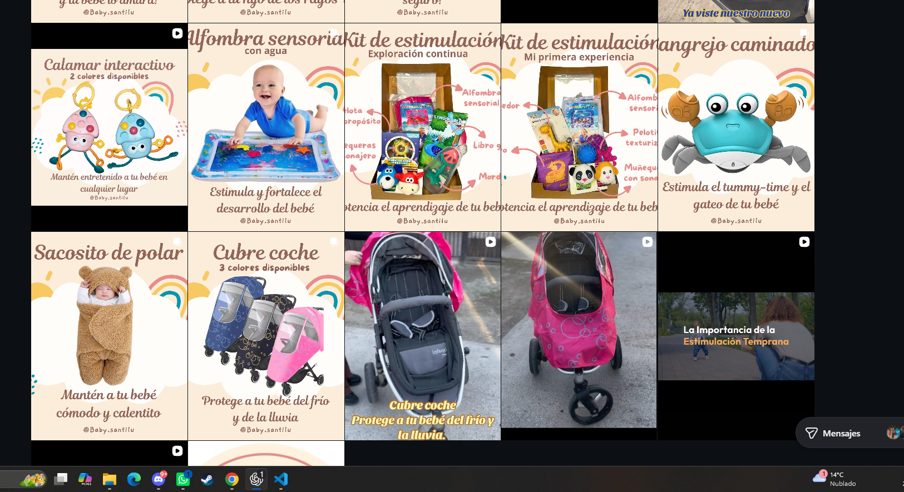

Por etapa, no por moda
Opciones que hacen sentido para su momento de desarrollo.
Encuentra juguetes y accesorios elegidos para acompañar la curiosidad, el movimiento y los grandes pequeños logros de cada etapa.

Opciones que hacen sentido para su momento de desarrollo.
Ideas para acompañar habilidades reales desde lo cotidiano.
Orientación cercana antes de elegir tu próximo juguete.
Cada edad trae nuevas formas de mirar, tocar, moverse y comprender el mundo.
Contrastes, sonidos suaves y texturas invitan a enfocar la mirada, mover el cuerpo y reconocer el entorno.
Una muestra de productos reales de la tienda. Consulta disponibilidad, colores y edades recomendadas directamente por Instagram.
Detrás de Baby Santilú está Paloma, médica y mamá emprendedora. Su mirada suma criterio y cercanía para ayudarte a elegir productos acordes a la etapa, los intereses y la forma de jugar de cada niño.
¿Tienes una necesidad específica?
Escríbenos antes de comprar y cuéntanos qué estás buscando.
La orientación de compra no reemplaza una evaluación ni una indicación médica individual.
Explora por edad, habilidad o una necesidad cotidiana.
Escríbenos por Instagram y recibe una recomendación cercana.
Coordinamos tu pedido y el envío a cualquier lugar de Chile.
En Instagram compartimos novedades, formas de usar cada juguete y pequeñas ideas para acompañar el desarrollo desde el juego.
Seguir @baby.santiluSi tu duda no aparece aquí, conversemos por Instagram.
La edad es una guía, pero también importan sus intereses y habilidades actuales. Cuéntanos un poco de tu niño o niña y te ayudamos a comparar opciones.
Sí. Coordinamos el pedido y la modalidad de envío por mensaje directo, según tu comuna y los productos elegidos.
Claro. Ese acompañamiento es parte de Baby Santilú. Escríbenos con la edad, qué le gusta y qué habilidad quieres acompañar.
No. Podemos orientarte en la elección de productos, pero una recomendación de compra no sustituye una evaluación clínica individual.
¿Listos para su próxima aventura?